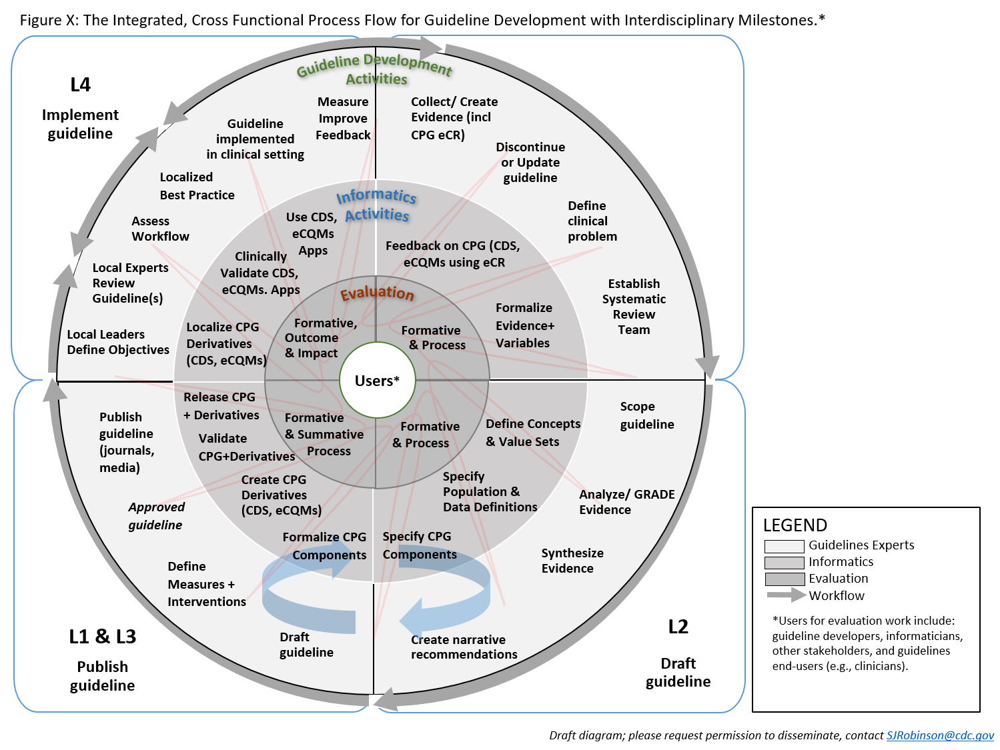

As implied by its name, Agile process and initiatives are able to move quickly and easily as has been demonstrated and accepted best practice in the software development industry. Agile development is characterized by the division of tasks into short phases of work and frequent reassessment and adaptation of plans. Furthermore, as implied in its name, Agile CPG Development takes a broader perspective on the knowledge engineering processes as applied to developing a CPG that is inclusive of the broader CPG value-stream as it pertains the guideline development group and knowledge implementers as “customers” (and/or suppliers in some contexts). A key tenant of Agile is early and frequent engagement with customers and other domain experts.
This section will provide the following:
Characteristics of Agile include:
While we apply most of the principles of Agile Software Development to the Knowledge Engineering Lifecycle, there are several critical factors to keep in mind as we develop software-enabled capabilities in knowledge-driven systems that will be discussed further below. (e.g. that the knowledge architecture and its separations of concerns must still be respected, though composite knowledge assets or artifacts enable further “chunking”, yet within constraints).
Relevant Agile Practices to be adapted to knowledge engineering function:

Fig. X Integrated, Cross-functional process flow for guideline development.
The levels of knowledge representation (i.e., L1 through L4) represent a framework, not a process or a specific kind of knowledge asset or artifact. The levels describe the general nature of knowledge artifacts and their representation in the typical progression of formalization through translation. Knowledge artifacts may have characteristics of more than one level (e.g., a narrative (L1) guideline could include semi-structure flow diagrams (L2) within them). Progression of formalization or translation may be rapid or instantaneous through the use of tooling (e.g., editors), reuse formalized assets or content from upstream (e.g., value set definitions from evidence or studies), and/or a re-conceptualization of the overall guidelines and CPG development lifecycle process.
Fig. X Levels of Representation in historical sense and as may be adapted for Agile approaches.
Agile approach to Knowledge Engineering and CPG Development
An Agile approach affords numerous, significant benefits for the knowledge engineering lifecycle, particularly in the context of CPG development. Many, if not most, Agile principles from software development can be applied to knowledge engineering, however, the fundamental principles as well as best practices of knowledge-driven systems and knowledge engineering must be adhered to as well. For instance, the knowledge architecture (the definitions of relationships between knowledge assets as manifested in the knowledge base) and knowledge representation requirements in constraints must be respected. In fact, the knowledge architecture and knowledge representations of afford a critical Agile practice- Domain-driven design (ref) and even take it further using well established knowledge-based approaches in the broad, deep, and complex healthcare domain. The knowledge-driven system approach further enables numerous other Agile best practices as described in part below.
We will highlight here a few key Agile principles and practices that may be employed the Agile CPG development process.
Cross-functional, Integrated CPG Development Team
The Agile CPG development teams are comprised of numerous experts, is the guideline development group is (see section on Guideline Development) as is knowledge engineering team. Such an organizational structure affords numerous benefits including sharing of information and artifacts, direct communication, and use of perhaps the most useful and adaptable knowledge-based systems yet, the collective of human minds, working in concert. The Agile CPG development team may be further extended, enhanced, and optimized through similar cross-functional integration with the local knowledge implementation functions (practice governance and local informatics/ehr build).
Integration with Knowledge Engineering with Guideline Development Process
See section on Collaboration with Guideline Development Group in Knowledge Acquisition (link). This is a key tenant of the Agile CPG process.
Integration/ Collaboration of CPG Development and Implementation
See section on Concurrent Development and Implementation in Knowledge Implementation
LIST of Benefits with prior references where described in prior sections:
“Chunking”
A process by which individual ‘pieces’ of knowledge are scoped and broken down into various “fit for purpose” chunks of formalizations (e.g. value sets, case feature definitions, metrics) and then grouped together in a meaningful whole (e.g. composite assets). Chunking enables iterative and incremental development of knowledge assets as well as creates ‘pieces’ of knowledge that are often highly reusable across numerous composite assets.
Constrained, yet “contextualized” parts
These ‘pieces’ of knowledge are constrained by the knowledge architecture and the standards by which they are represented or formalized. However, they must also address the purpose and usage for which they are intended with in a given knowledge of asset/ artifact. This purpose and usage are often themselves formalized in asset metadata to enable appropriate reuse.
Building by composition/ restriction
Composition, in knowledge engineering and representation, simply refers to the ability to combine multiple constituent knowledge assets into a whole that not only can take advantage of the constituent capabilities, but any additional formalisms or expressions used directly within the composite asset/ artifact. Quality measures (see HL-7 Measure-IG) are one example of a composite asset. Restriction refers to putting explicit constraints on a given knowledge asset/artifact (composite or otherwise) in order to limit or further scope that which it expresses (e.g. to put a further filter on a cohort definition).
Incremental
These ‘pieces’ (or chunks) of knowledge can then be combined and reused across various appropriate composite knowledge assets in a purposeful constrained way (e.g. through use of composite assets defined in the knowledge architecture) and./or constrained or extended further reuse (as afforded by their own metamodel definitions).
Iterative
Iteration, in this context, often refers to successive build-test phases not only for the individual, functional ‘pieces’ of knowledge, but also taking excessive passes of build-test phases of the composite assets (and/or of the restricted or extended ‘pieces’ of knowledge).
Testing at all levels and compositions is the knowledge engineering lifecycle’s equivalent of test integration in Agile development.
Test-driven Knowledge Engineering
Test-driven knowledge engineering can significantly accelerate the knowledge engineering lifecycle from acquisition to translation and representation (across all Levels) to validation and implementation. Furthermore, using test-driven knowledge engineering fully across the lifecycle and all individual and composite knowledge assets affords a means for test integration and Agile CPG Development.
Test cases may come from a number of sources. This includes knowledge engineers functioning at the L1 and L2 Levels of Representation and their respective elicitations, translations, and specifications. Obviously this can be a tedious and onerous process with notable opportunities for error. There exists an opportunity for tooling to create such test cases (see Boonie tool for Measures) as well as to refine test cases through validation and grading tooling (comparison, profiling, sensitivity analysis on success executions). Grading tooling enables the refinement of non-gold standard expected results and/or inputs. There are further techniques and tools beyond the scope of this implementation guide for generating high-quality test cases.
However, use of real and or realistic data sets (e.g. synthetic data sets, deidentified data sets- as from implementation partners), together with upfront tooling (e.g. query builders, data profiler, data mining and visualization tools, or even machine learning capabilities) can be used to create comprehensive and/or representative test decks (test case sets) to engineer knowledge against. The same approaches and tooling for grading and validation can likewise be employed against such data sets.
Specification by example
Creation of data inputs, parameters, and expected results at all levels of asset/artifact and expression (distinct and composite assets) for use in the creation of computable formalisms and/or expressions. This may include:
This may or may not include derivatives such as content metadata from the assets themselves (e.g. codes in a value set)
This is akin to code coverage in reverse using expression interpreter to produce possible range of inputs and expected results
Any of the above may require further effort to be sufficiently refined through grading and validation tooling described above.
Test-driven knowledge formalism and/or expression
This is the closest approximation to test-driven software development where there is repetition of very short build-test phases of the development lifecycle for the expression formalism. This may be done together with refinement of the test cases themselves, thus resulting in an improved test deck as well as formal expression. In the latter case, one knowledge engineer may create the test deck (often an SME), while another starts with a few critical test cases, using short iterations to create the logic expression, and using the reasonably performing versions of the logic to aid in generating additional test cases (against a broader set of inputs) that can then be graded rather rapidly by another knowledge engineer (typically an SME) with the aid of validation tooling used.
This approach is analogous to “paired-programming” and leverages the specializations of each knowledge engineers perspective and skill-set to focus on their expertise and the more likely to avoid systematic errors in knowledge translation since each is situated on either side from domain to explicit formalism/expression. However, there is yet opportunity for introducing systematic errors through this approach that must be addressed further downstream. These errors may be further reduced for use of real-world data and or de-identified data sets.
Agile Validation enabled by Test-driven Knowledge Engineering
Using the data, processes, and/or tools above, one can generate a near-gold standard test deck for validation with completion of the knowledge ‘build’ task. Additional tooling to expand and randomize input data can be used further in the validation process. However, errors may yet be introduced by the knowledge engineers as described above. To address this, typically a second, independent data set with its own validation by a separate knowledge engineer that was not part of the formalization/expression ‘build’ process must be performed. This is often done concurrent with or as part of knowledge implementation validation to serve both purposes.
Iteration, rapid-cycle feedback
In the knowledge engineering function, iteration and rapid cycle feedback is typically related to the combination of “chunking” work into smaller ‘pieces’ of knowledge (composite asset components) and test-driven development (of formalism/ expression) as described above. This enables rapid-cycle build-test phases to develop reliable expressions and test ducts for “chunks” or components, with his successive ‘build’-test phases further aggregates and or composite assets/artifacts. This further affords the ability to “fail early, fail often, and at lower cost” at earlier stages in the development process. This approach it is often used for the majority of CPGCaseFeatures.
However, there is an alternative approach with composite assets or even chained logic that generates intermediate inferences that may be leveraged depending on the complexity of the knowledge asset and the nature of the intermediate inferences. Some composite assets that are less or moderately complex, have intermediate inferences with substantive domain meeting, and where it’s data inputs have likewise been previously validated and/or re-uses sufficient components that have been previously validated may actually be more efficient and less time-consuming to validate as a whole. Tooling with features such as comparison (including sensitivity analysis) of successive executions; profiling of inputs, results, and intermediate
Inferences; means to trace dependencies and propagation of errors there-in (e.g. sankey diagrams); means to find and analyze similar test cases; and the ability to grade across dependencies afford significant advantage in this approach.
Lastly, a combination of the bottom-up and top-down approaches above may not only be the most efficient, but may fall out of the natural progression of knowledge engineering work product in a large composite asset such as a CPG. Base data resources (required data elements), value sets, and their combination can be identified, developed, and validated very early in the CPG development process. Likewise, the same often holds true for the majority of CPGCaseFeautures. Some CPGCaseFeatures with numerous and/or chained dependencies on other CPGCaseFeautures (often developed through the aforementioned approach) may be addressed as a composite asset. Individual CPGRecommendations, together with their dependent CPGCaseFeatures, may be similarly approached as a composite asset. Nearly by necessity, CPGStrategies and CPGPathways are addressed as composite assets.
Leveraging a Knowledge Base (Knowledge Content Management System)
Leverage Knowledge Base (in an ‘intelligent’ Knowledge Content Management System)
For an introduction to knowledge content management systems see sections on knowledge management in Knowledge Representation from knowledge engineering lifecycle. The knowledge content management system leverages various features of the knowledge assets in the knowledge base (the corpus of knowledge assets and content) and is what enables the Agile practice of Domain-driven design/ development. A knowledge content management system is a nearly essential capability for knowledge engineers to manage a large corpus of interrelated knowledge assets as is needed for much of the Agile knowledge engineering methodologies described above to be feasible for any significant effort.
For instance, an more capable knowledge content management system can: facilitate “chunking” within the constraints of the knowledge architecture and asset definitions; enable iteration on separate, yet highly related assets through versioning and dependency management; provide a framework for incremental building by composition and/or restriction; can facilitate the ready reuse of assets across the knowledge engineering effort; enable adaptability of the knowledge architecture as required; provide workflow and ‘decision-support’ features for the work activities of the knowledge engineers; and facilitate more effective and efficient testing and validation processes.
Some of the most fundamental features of a knowledge content management system include: semantic and/or referential asset metadata, asset meta-model definitions, and the knowledge asset ontology that reflects the overall knowledge architecture. The knowledge content management system affords the realization of the knowledge architecture and its various concretized knowledge assets where the nature of these features are described in more detail.
Use of Ontologies and Terminologies
In a healthcare, the knowledge content management system often includes and/or references openly available (or commercial) foundational knowledge content such as terminologies and ontologies. These terminologies and ontologies contain coded concepts and codified or semantic relationships that can be further leveraged as knowledge asset content as well as for their metadata and inferring relationships between assets.
Knowledge Engineering Workflow Support
Furthermore, a knowledge content management system also provides workflow (and/or ‘decision’) support for the knowledge engineers, and large teams thereof. The workflow and/or decision-support capabilities are likewise tied to the various features of the knowledge assets described above. A knowledge content management system may further address dependency management (inclusive of versioning) as part of the knowledge engineers’ “decision support”. Governance processes and Publication rights management may be further included in the knowledge content management system.
KE Tooling Leveraging the Knowledge Content Management System
Various knowledge engineering tooling such as editors or authoring tools, and even validation tools may interoperate with and/or be built into the knowledge content management system to directly leverage its capabilities. This can further accelerate the knowledge engineering and even the overall CPG development process by enabling these tools to directly access content (e.g knowledge assets) as well as features of the knowledge content management system at ‘author-time’ (when the assets are being created in the tools).
Advanced Knowledge Content Management Capabilities
More advanced knowledge content management systems may retain related data assets (e.g refined gold standard data sets as used in validation) together with their explicit linkages (e.g. provenance) to each other data assets as well as to their respective knowledge assets. This further enables various machine learning approaches and capabilities to be employed within the knowledge content management system (against linked knowledge and data assets including terminologies and ontologies described above) to further aid in the discovery of related, like, and/or conflicting knowledge assets to further accelerate the knowledge engineering processes. In the context of an integrated or concurrent CPG development and implementation approach (as described in the sections on Knowledge Implementation and Test-driven Knowledge Engineering), the use of real-world data, as previously described, may be leveraged in a similar or even more advanced manner (for example as a knowledge graph). Such an example would be to use machine learning capabilities within the context of the knowledge base and its related assets to discover and suggest new CPGCaseFeatures to the knowledge engineer. Many of these advanced features may be used not only at ‘author-time’ (asset development), but also at ‘run-time’ (note: HL-7 Definitional Assets and even CQL affords a means to call referenced external services).
{% include container-end.html %} {% include footer.html %}